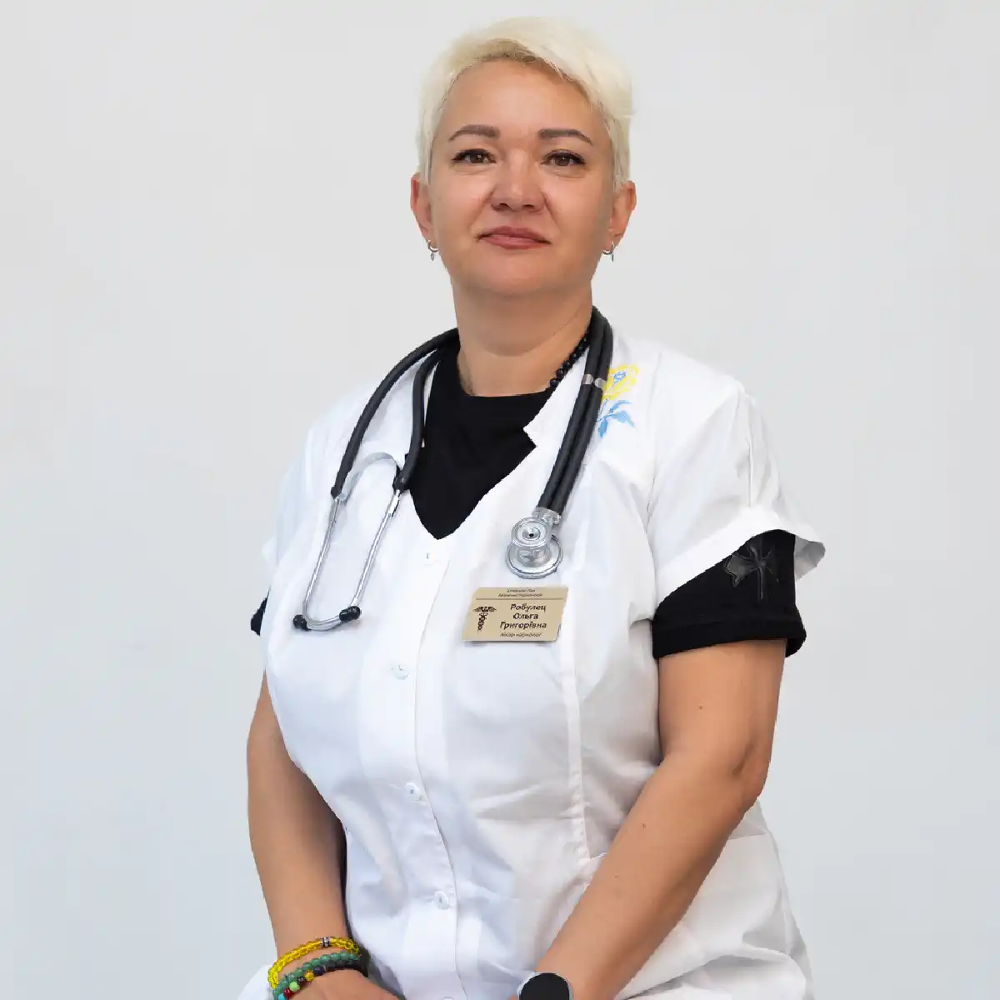

+38(068)
79 72 782
+38(068)
79 72 782Лечение наркозависимых без постановки на учёт в Харькове
Индивидуальный подход и поддержка на пути к выздоровлению


Бесплатная консультация, работаем круглосуточно 24/7
Индивидуальный подход и поддержка на пути к выздоровлению

Дата написания: 12 окт. 2026 г.
Последнее обновление: 12 окт. 2026 г.
Лечение наркозависимых без постановки на учёт в Харькове — востребованное направление наркологической помощи для людей, которые хотят избавиться от наркотической зависимости и сохранить конфиденциальность обращения к врачу. Современные методы лечения позволяют проводить медицинскую детоксикацию, облегчать наркотическую абстиненцию, получать консультации нарколога и проходить реабилитацию в амбулаторных или стационарных условиях. Анонимное лечение наркомании в Харькове предполагает соблюдение медицинской тайны и защиту личной информации пациента. Возможность лечения без определённых форм наркологического учёта и порядок оформления медицинской документации необходимо уточнять в выбранном учреждении. Своевременное обращение к специалисту помогает оценить состояние здоровья, определить степень зависимости и разработать индивидуальную программу восстановления.
Лечение наркомании без постановки на наркологический учёт обычно подразумевает получение медицинской помощи с соблюдением конфиденциальности и без необоснованного распространения сведений о наркотической зависимости. При этом важно различать диспансерное наблюдение, оформление медицинской документации и передачу информации третьим лицам. Конфиденциальная консультация не означает, что врач может отказаться от обязательного документирования медицинской помощи. В Украине сведения о состоянии здоровья, диагнозе и факте обращения за медицинской помощью относятся к информации, защищённой врачебной тайной. Лечение наркотической зависимости в Харькове может включать обследование, медикаментозную терапию, психологическую поддержку и реабилитацию. Перед началом лечения пациенту рекомендуется уточнить правила оформления документов, обработки персональных данных и условия предоставления услуг.
Анонимное лечение наркотической зависимости в Харькове возможно в рамках услуг медицинских учреждений, которые предусматривают соответствующий порядок конфиденциального обращения. Пациент может получить консультацию нарколога, обсудить особенности зависимости и выбрать подходящий формат лечения. При этом медицинская организация обязана соблюдать требования законодательства относительно защиты персональных данных и ведения медицинской документации. Полная анонимность не всегда возможна, особенно если применяются препараты специального контроля или требуется госпитализация. Конфиденциальное лечение наркомании направлено на защиту частной жизни пациента и создание условий для своевременного обращения за профессиональной помощью. Перед записью желательно уточнить, какие документы необходимы, как хранится информация и в каких случаях сведения могут передаваться другим учреждениям.
Первым шагом становится обращение к наркологу для оценки характера наркотической зависимости и общего состояния здоровья. Лечение наркозависимости без постановки на учёт в Харькове начинается с консультации, во время которой специалист уточняет вид употребляемых веществ, продолжительность употребления, наличие абстиненции и предыдущие попытки отказаться от наркотиков. Врач оценивает возможные осложнения и определяет, необходимы ли медицинская детоксикация, амбулаторная терапия или стационарное наблюдение. Пациенту объясняют особенности лечения, возможные риски и правила конфиденциальности. При наличии выраженной интоксикации или тяжёлого синдрома отмены помощь организуется с учётом срочности состояния. Начать лечение наркомании в Харькове можно с индивидуального обращения, не дожидаясь развития серьёзных физических или психологических осложнений.
Консультация нарколога без постановки на учёт в Харькове позволяет получить профессиональную оценку состояния и рекомендации по лечению наркотической зависимости. Во время приёма врач собирает анамнез, уточняет жалобы, продолжительность употребления и наличие сопутствующих заболеваний. Особое внимание уделяется симптомам наркотической абстиненции, нарушениям сна, тревожности, изменениям поведения и возможным осложнениям. При необходимости назначаются лабораторные исследования, ЭКГ и дополнительные обследования. Консультация нарколога в Харькове помогает определить подходящий метод лечения, необходимость медикаментозной поддержки и дальнейшей психотерапевтической работы. Все вопросы конфиденциальности, оформления медицинских документов и возможного диспансерного наблюдения пациент может обсудить до начала терапии.
Анонимный вызов нарколога на дом в Харькове позволяет организовать медицинскую консультацию в привычной для пациента обстановке с соблюдением требований конфиденциальности. Домашний визит особенно актуален при физическом дискомфорте, тревожности или затруднениях с самостоятельным посещением медицинского учреждения. Врач проводит осмотр, оценивает сознание, дыхание, артериальное давление, пульс и выраженность симптомов отмены. После обследования специалист определяет возможность лечения на дому и необходимость дополнительных медицинских мероприятий. Наркологическая помощь на дому в Харькове может включать рекомендации по лечению, симптоматическую терапию и последующее наблюдение. Если обнаруживаются признаки передозировки, судороги, выраженное нарушение сознания или дыхания, необходимо немедленно вызвать экстренную помощь по номеру 103 или 112.
Лечение наркомании на дому в Харькове может рассматриваться при стабильном состоянии пациента, отсутствии тяжёлых осложнений и наличии возможности медицинского контроля. Домашняя помощь направлена на облегчение отдельных симптомов абстиненции, коррекцию нарушений сна и самочувствия, а также организацию дальнейшего лечения зависимости. При наличии показаний врач назначает медикаментозную терапию и определяет необходимость повторных осмотров. Лечение наркотической зависимости без постановки на учёт не означает отсутствие медицинского наблюдения или возможности госпитализации. Домашний формат подходит не всем пациентам, особенно при тяжёлой интоксикации, психозе, судорогах, выраженном обезвоживании или сочетании нескольких веществ. Для достижения устойчивого результата медицинскую помощь рекомендуется дополнять психологической поддержкой и программой профилактики повторного употребления.
Амбулаторное лечение наркомании в Харькове предусматривает регулярные консультации и медицинское наблюдение без постоянного пребывания в стационаре. Такой формат подходит пациентам со стабильным физическим и психическим состоянием, которые способны соблюдать назначения врача и посещать контрольные осмотры. Амбулаторная программа может включать медикаментозное лечение, психотерапию, работу с мотивацией и профилактику рецидивов. При опиоидной зависимости могут рассматриваться специализированные программы лечения с применением препаратов, эффективность которых подтверждена клиническими исследованиями. Конфиденциальное амбулаторное лечение наркозависимости позволяет сочетать терапию с повседневной жизнью при условии соблюдения медицинских рекомендаций. Если состояние ухудшается или возникает высокий риск осложнений, врач может рекомендовать госпитализацию.
Стационарное лечение наркомании в Харькове необходимо при тяжёлой интоксикации, осложнённой абстиненции, выраженных психических нарушениях или невозможности обеспечить безопасное наблюдение в домашних условиях. Госпитализация может потребоваться при судорогах, выраженном обезвоживании, нарушениях сознания, опасных изменениях сердечного ритма и других осложнениях. В условиях стационара проводится наблюдение за состоянием пациента, назначаются необходимые обследования и медицинская терапия. Лечение наркотической зависимости в стационаре также позволяет организовать комплексную работу с психологическими и поведенческими аспектами зависимости. Продолжительность пребывания определяется индивидуально. Конфиденциальность лечения обеспечивается в пределах действующего законодательства, а возможность оформления помощи без отдельных форм учёта необходимо уточнять непосредственно в медицинском учреждении.
Анонимное лечение наркомании в частной клинике Харькова предполагает возможность обращения за специализированной медицинской помощью с соблюдением требований защиты личной информации. Частные медицинские учреждения могут предлагать консультации нарколога, амбулаторные программы, детоксикацию, лечение абстиненции и реабилитационное сопровождение. Выбор конкретного метода зависит от диагноза, тяжести зависимости и медицинских показаний. При обращении важно убедиться, что учреждение имеет необходимую лицензию, квалифицированный персонал и условия для оказания заявленных услуг. Частная наркологическая клиника в Харькове должна объяснять пациенту порядок оформления медицинских документов, условия конфиденциальности и стоимость лечения. Сам по себе частный статус учреждения не гарантирует полного отсутствия медицинских записей или обязательных процедур, предусмотренных законом.
Индивидуальная программа лечения наркомании в Харькове разрабатывается после оценки состояния пациента, особенностей употребления наркотиков и сопутствующих медицинских проблем. Комплексный подход может объединять медикаментозное лечение, помощь при синдроме отмены, психотерапию, работу с мотивацией и длительную профилактику рецидивов. Особое значение имеет определение причин употребления, возможных психических расстройств и факторов, повышающих вероятность возвращения к наркотикам. При опиоидной зависимости врач может рекомендовать специализированное лекарственное лечение, а при зависимости от стимуляторов важную роль играют доказательные психологические и поведенческие методы. Комплексное лечение наркозависимости должно учитывать потребности пациента и предусматривать регулярную оценку результатов терапии. Продолжительность программы определяется индивидуально и зависит от динамики восстановления.
Детоксикация от наркотиков в Харькове представляет собой медицинскую помощь, направленную на стабилизацию состояния после употребления психоактивных веществ или во время синдрома отмены. В зависимости от клинической ситуации лечение может включать коррекцию обезвоживания, симптоматическую терапию, наблюдение и медикаментозную поддержку. Необходимость госпитализации определяется после оценки сознания, дыхания, сердечно-сосудистых показателей и риска осложнений. Детоксикация после наркотиков без постановки на учёт предполагает соблюдение конфиденциальности обращения, но не отменяет обязательных требований к медицинской документации. Важно учитывать, что детоксикация не является полноценным лечением зависимости. После стабилизации состояния пациенту рекомендуется дальнейшая терапия, направленная на снижение тяги к наркотикам и профилактику повторного употребления.
Капельница от наркотиков на дому в Харькове может применяться при определённых медицинских показаниях, например при обезвоживании или невозможности восполнить жидкость обычным способом. Перед назначением инфузионной терапии врач оценивает состояние пациента, артериальное давление, пульс, дыхание и наличие сопутствующих заболеваний. Состав и объём растворов определяются индивидуально. Капельница при наркотической интоксикации не является универсальным способом ускоренного выведения наркотиков и не заменяет лечение зависимости. При передозировке опиоидов, нарушениях дыхания, судорогах или тяжёлой стимуляторной интоксикации требуется экстренная медицинская помощь. Домашняя инфузионная терапия допустима только при стабильном состоянии пациента и наличии соответствующих показаний.
Снятие наркотической ломки в Харькове направлено на облегчение физических и психологических проявлений синдрома отмены после прекращения или уменьшения употребления психоактивных веществ. При опиоидной абстиненции возможны мышечные боли, тревожность, потливость, озноб, тошнота, диарея и бессонница. Интенсивность симптомов зависит от употребляемого наркотика, длительности зависимости и особенностей организма. Лечение наркотической абстиненции без постановки на учёт может организовываться с соблюдением конфиденциальности в рамках действующих правил оказания медицинской помощи. Для облегчения симптомов врач использует медикаментозные и поддерживающие методы, соответствующие клинической ситуации. После снятия острой абстиненции необходимо продолжить лечение зависимости, поскольку устранение физических симптомов не исключает повторного употребления.
Лечение синдрома отмены наркотиков на дому в Харькове возможно при неосложнённой абстиненции и отсутствии факторов, требующих госпитализации. Во время осмотра нарколог оценивает выраженность симптомов, возможность приёма жидкости, показатели кровообращения и психическое состояние пациента. При необходимости назначается симптоматическая терапия, направленная на уменьшение тошноты, нарушений сна и других проявлений отмены. При опиоидной зависимости важно рассматривать не только кратковременное облегчение симптомов, но и дальнейшее специализированное лечение. Помощь при наркотической ломке на дому требует медицинского контроля и соблюдения назначений врача. При тяжёлом обезвоживании, нарушении сознания, судорогах или выраженном психическом возбуждении необходима госпитализация.
Лечение зависимости от героина и фентанила в Харькове требует комплексного подхода из-за высокого риска передозировки, выраженной физической зависимости и повторного употребления. Эти вещества относятся к опиоидам и могут вызывать опасное угнетение дыхания. После прекращения употребления нередко развиваются мышечные боли, потливость, тревожность, нарушения сна и желудочно-кишечные расстройства. Медицинская помощь может включать лечение синдрома отмены, психологическое сопровождение и специализированную терапию опиоидной зависимости. Наиболее изученные лекарственные методы предусматривают применение метадона или бупренорфина в соответствующих программах. Конфиденциальное лечение опиоидной зависимости должно сопровождаться разъяснением правил медицинского наблюдения. После детоксикации толерантность к опиоидам снижается, поэтому повторное употребление прежней дозы значительно повышает риск смертельной передозировки.
Лечение метадоновой зависимости в Харькове начинается с определения характера употребления препарата, длительности приёма и наличия признаков зависимости. Метадон относится к длительно действующим опиоидам, поэтому синдром отмены может развиваться постепенно и сохраняться продолжительное время. Резкое прекращение употребления без медицинского наблюдения способно вызвать выраженные симптомы абстиненции и повысить риск возвращения к наркотикам. Врач оценивает состояние пациента и определяет дальнейшую тактику, которая может включать специализированное медикаментозное лечение и психологическую поддержку. Если метадон применяется по назначению врача в программе лечения опиоидной зависимости, самостоятельно прекращать его приём не следует. Конфиденциальная помощь при метадоновой зависимости предоставляется с соблюдением медицинской тайны и установленных правил оказания соответствующих услуг.
Лечение зависимости от налбуфина в Харькове направлено на устранение проблем, связанных с немедицинским или неконтролируемым использованием опиоидных обезболивающих препаратов. При продолжительном употреблении может формироваться физическая зависимость, сопровождающаяся симптомами отмены после уменьшения дозы. Пациенты могут испытывать тревожность, бессонницу, мышечные боли, потливость и выраженный дискомфорт. Во время консультации нарколог уточняет причину первоначального применения обезболивающих, продолжительность употребления и наличие других веществ. Лечение зависимости от опиоидных обезболивающих предусматривает индивидуальную оценку, безопасную коррекцию терапии и при необходимости специализированную помощь при опиоидной зависимости. Особое внимание уделяется лечению хронической боли, если именно она стала одной из причин длительного использования препаратов.
Лечение амфетаминовой зависимости в Харькове направлено на восстановление физического и психологического состояния пациента, уменьшение тяги к стимуляторам и изменение поведения, связанного с употреблением. Амфетамин и метамфетамин способны вызывать бессонницу, тревожность, повышение артериального давления, тахикардию и психические нарушения. После прекращения употребления возможны выраженная усталость, сонливость, подавленное настроение и сильное желание повторно принять наркотик. Лечение зависимости от метамфетамина может включать психотерапевтические и поведенческие методы, медицинскую помощь при осложнениях и длительное наблюдение. При развитии психоза, тяжёлой депрессии или опасного возбуждения требуется специализированная помощь. Программа лечения подбирается индивидуально с учётом продолжительности употребления и сопутствующих расстройств.
Лечение зависимости от мефедрона в Харькове предполагает медицинскую оценку последствий употребления синтетических катинонов и работу с психологическими механизмами зависимости. Мефедрон и Альфа-PVP могут вызывать выраженное возбуждение, тревожность, бессонницу, тахикардию и нарушения психического состояния. При продолжительном употреблении повышается риск истощения, эмоциональной нестабильности, подозрительности и психотических симптомов. Лечение зависимости от Альфа-PVP включает коррекцию выявленных осложнений, восстановление сна и применение методов психотерапии, направленных на предупреждение повторного употребления. При тяжёлом возбуждении, гипертермии, судорогах или галлюцинациях необходима экстренная медицинская оценка. Конфиденциальность лечения обеспечивается в соответствии с законодательством и внутренними правилами медицинского учреждения.
Лечение кокаиновой зависимости в Харькове направлено на снижение тяги к веществу, восстановление психоэмоционального состояния и профилактику повторного употребления. Кокаин оказывает выраженное стимулирующее воздействие на центральную нервную и сердечно-сосудистую системы. Его употребление связано с риском тахикардии, артериальной гипертензии, нарушений сердечного ритма и острого коронарного синдрома. После прекращения употребления часто появляются усталость, снижение настроения, нарушения сна и психологическая тяга. Конфиденциальное лечение зависимости от кокаина может включать психотерапию, поведенческие методы, медицинское наблюдение и коррекцию сопутствующих психических нарушений. При боли в груди, судорогах или выраженной одышке необходима немедленная экстренная помощь. Продолжительность лечения зависит от состояния пациента и динамики восстановления.
Лечение полинаркомании в Харькове требуется пациентам, которые одновременно или последовательно употребляют несколько психоактивных веществ. Сочетание опиоидов, стимуляторов, алкоголя, транквилизаторов и других препаратов может значительно осложнять течение зависимости и повышать риск передозировки. Отдельные вещества способны усиливать токсическое действие друг друга или маскировать опасные симптомы. Во время обследования нарколог уточняет полный перечень употребляемых препаратов, длительность их применения и характер возникающих нарушений. Комплексное лечение полинаркомании предполагает оценку интоксикации, возможных синдромов отмены, сопутствующих заболеваний и психологических факторов. При сочетании наркотиков с алкоголем может дополнительно потребоваться лечение алкогольной абстиненции. Индивидуальная программа должна учитывать все значимые вещества, а не ограничиваться устранением симптомов после одного наркотика.
Реабилитация наркозависимых в Харькове является важной частью комплексного лечения и направлена на формирование устойчивых навыков жизни без немедицинского употребления наркотиков. После стабилизации физического состояния пациент может продолжить психологическую работу, направленную на преодоление тяги, распознавание провоцирующих ситуаций и восстановление социальных связей. Реабилитационная программа может включать индивидуальную психотерапию, групповые занятия, семейное консультирование и профилактику рецидивов. Конфиденциальная реабилитация после наркотической зависимости помогает пациенту обращаться за поддержкой без опасений необоснованного разглашения медицинской информации. При этом условия анонимности и документационного оформления необходимо уточнять в выбранном учреждении. Продолжительность реабилитации определяется индивидуально и зависит от тяжести зависимости, мотивации и результатов лечения.
Лечение наркомании без согласия пациента является сложным медицинским и правовым вопросом. В обычных обстоятельствах медицинская помощь совершеннолетнему дееспособному человеку предоставляется на основании его информированного согласия. Родственники могут обратиться за консультацией, получить рекомендации по общению с зависимым человеком и обсудить способы мотивации к добровольному лечению. Однако они не могут самостоятельно заменить согласие пациента своим решением. Исключения возможны только в предусмотренных законодательством ситуациях, например при определённых неотложных состояниях или наличии законных оснований для недобровольной медицинской помощи. Помощь родственникам наркозависимых в Харькове может включать консультации нарколога и психолога. При передозировке, потере сознания, нарушении дыхания или непосредственной угрозе жизни необходимо вызвать 103 или 112.
Продолжительность лечения наркомании в Харькове зависит от вида употребляемых веществ, длительности зависимости, тяжести физического состояния и психологических особенностей пациента. Первичная медицинская стабилизация может занимать относительно короткий период, тогда как лечение синдрома отмены, восстановление сна и эмоционального состояния требуют дополнительного времени. При опиоидной зависимости специализированная медикаментозная терапия может продолжаться месяцы и годы в зависимости от индивидуальных показаний. Психотерапия и реабилитация также предполагают длительную работу. Комплексное лечение наркотической зависимости не имеет универсального срока, одинакового для всех пациентов. Основным критерием эффективности является не скорость завершения процедур, а устойчивое улучшение состояния, снижение риска передозировки и формирование навыков предупреждения повторного употребления.
Стоимость лечения наркомании без постановки на учёт в Харькове начинается от 2499 грн.
Чтобы получить анонимную наркологическую помощь в Харькове, необходимо связаться с медицинским учреждением и уточнить доступные форматы консультации и лечения. При первичном обращении желательно сообщить вид употребляемого вещества, продолжительность употребления, время последней дозы и основные жалобы. Эти сведения помогают оценить срочность состояния и предварительно определить необходимость домашнего осмотра, амбулаторной помощи или госпитализации. Дополнительно можно уточнить порядок сохранения конфиденциальности, оформления медицинской документации и стоимость услуг. Лечение наркозависимых без постановки на учёт в Харькове должно проводиться с соблюдением законодательства, медицинских стандартов и прав пациента. При тяжёлой интоксикации, потере сознания, судорогах или нарушениях дыхания необходимо немедленно обратиться за экстренной медицинской помощью.
Телефон для консультации и вызова нарколога на дом в Харькове: +38(050-021-69-57)

Статья проверена экспертом
Робулец Ольга
Врач нарколог, ординатор
Возможно интересная статья:
Влияние марихуаны на организм человека

Лечение наркотической зависимости начинается с консультации и оценки состояния пациента. Врач уточняет, какие вещества употреблялись, как долго и в каких количествах, когда был последний приём, есть ли симптомы абстиненции, хронические заболевания и предыдущие попытки лечения. При интоксикации или выраженном синдроме отмены первым этапом может стать медицинская детоксикация и стабилизация состояния. После этого составляется дальнейший план лечения зависимости.
В некоторых случаях медицинскую помощь можно оказать на дому, однако это зависит от вида употреблённого вещества, выраженности интоксикации или абстиненции и общего состояния пациента. Перед началом лечения нарколог оценивает сознание, дыхание, давление, пульс и возможные осложнения. При тяжёлом состоянии или высоком риске осложнений требуется лечение в стационаре.
Стационар необходим, если состояние пациента невозможно безопасно контролировать дома. Показаниями могут быть нарушение сознания, угнетение дыхания, судороги, выраженное возбуждение или психоз, тяжёлое обезвоживание, серьёзные сердечно-сосудистые нарушения, сочетанное употребление нескольких веществ или тяжёлые сопутствующие заболевания. Некоторые виды синдрома отмены также требуют медицинского наблюдения и специализированного лечения.
Программа детоксикации подбирается индивидуально и зависит прежде всего от вещества и состояния пациента. Она может включать медицинское наблюдение, коррекцию обезвоживания и электролитных нарушений, симптоматическую терапию и препараты для уменьшения проявлений синдрома отмены. Для некоторых видов зависимости существуют специальные лекарственные методы лечения. Детоксикация помогает пройти острый период, но сама по себе не устраняет наркотическую зависимость.
Продолжительность детоксикации индивидуальна. Она зависит от употребляемого вещества, длительности и частоты употребления, дозировки, сочетания нескольких веществ и состояния организма. У одних пациентов наиболее выраженные симптомы проходят за несколько дней, у других медицинское наблюдение и лечение требуется дольше. Точные сроки можно определить только после оценки состояния пациента.
При некоторых вариантах лёгкого или умеренного синдрома отмены лечение возможно амбулаторно или на дому под наблюдением врача. Однако тяжёлая ломка, выраженное обезвоживание, нарушения сознания, психические расстройства, судороги или серьёзные сопутствующие заболевания требуют стационара. Тактика также существенно зависит от вида наркотического вещества.
Единого срока не существует. Продолжительность ломки зависит от вещества, его дозы, периода употребления и индивидуальных особенностей организма. Острые симптомы могут продолжаться несколько дней и дольше, а нарушения сна, тревожность, снижение настроения и тяга к веществу иногда сохраняются после завершения острого периода. Поэтому после детоксикации важно продолжать лечение зависимости.
Наркотическая зависимость является хроническим, но поддающимся лечению расстройством. При комплексном лечении можно добиться длительной устойчивой ремиссии, прекратить употребление наркотиков и значительно восстановить качество жизни. Для этого обычно недостаточно только снять ломку или провести детоксикацию — требуется дальнейшая работа с зависимостью и профилактика рецидива.
Лечение может включать медицинскую детоксикацию, медикаментозную терапию, психотерапию, мотивационную работу, лечение сопутствующих психических и соматических нарушений, профилактику рецидива и реабилитацию. При опиоидной зависимости существуют доказанные методы длительной медикаментозной терапии, включая препараты на основе метадона или бупренорфина. Конкретная программа определяется индивидуально.
Для планового лечения важно участие самого пациента и его готовность сотрудничать с врачом. Если человек отказывается от помощи, родственники могут получить консультацию специалиста и обсудить способы мотивировать его обратиться за лечением. Если состояние человека представляет непосредственную угрозу жизни — например, при передозировке, нарушении сознания или дыхания — необходима экстренная медицинская помощь.
Не стоит ограничиваться угрозами, конфликтами или попытками силой заставить человека лечиться. Родственники могут обратиться к специалисту без пациента и получить рекомендации по дальнейшим действиям. Мотивационная работа помогает человеку лучше понять последствия употребления и постепенно сформировать готовность к лечению.
Не каждому пациенту требуется одинаковый формат реабилитации, однако после детоксикации дальнейшее лечение крайне важно. Детокс устраняет или уменьшает острые проявления интоксикации и синдрома отмены, но не решает психологические и поведенческие механизмы зависимости. Реабилитация, психотерапия и другие программы поддержки помогают закрепить трезвость и снизить риск повторного употребления.
Да, в ряде случаев нарколога можно вызвать на дом для оценки состояния пациента после употребления наркотиков. Врач определяет выраженность интоксикации или абстинентного синдрома и решает, возможно ли безопасное лечение дома или необходима госпитализация. При потере сознания, выраженном угнетении дыхания, судорогах, тяжёлом возбуждении или подозрении на передозировку следует обращаться за экстренной медицинской помощью.
Анонимно

Помогли при наркотической зависимости
Номер телефона:
+380 (68) 797 27 82
+380 (50) 021 69 57
Адрес наркологического центра вашего города уточняйте по
телефону
Работаем в: Киеве, Одессе, Львове, Харькове, Днепре,
Запорожье, Черкассах, Чугуеве, Черноморске, Каменском
Telegram: t.me/umbrellaplus
График работы: Круглосуточно